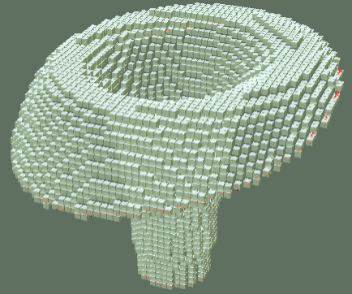

A pure javascript webapp to generate arbitrary dome shapes for minecraft (mainly).
You can run the webapp directly at github.io.
Or, you can download the zip and run it from a local directory.

Click to see the generated building plans for this object.